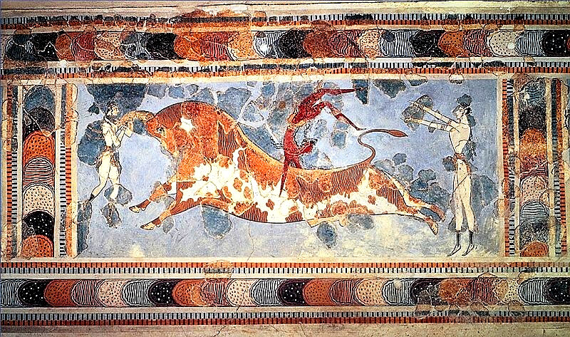
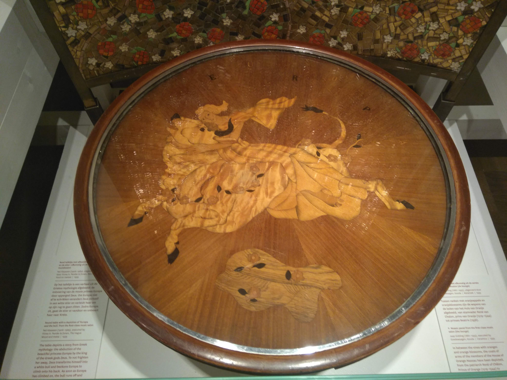

Crete | Mythology | Antiquity
The Cretan Bull
July 2020
The Leaping Bull in Knossos (Crete)

The Leaping Bull in Knossos (Crete)
Introduction
The Minoan civilization (3000-1000 BCE) is seen as predecessor of Athens' greatness and Ancient Greek high culture. It paved the way towards Ancient Greek literacy and influenced its culture and mythology.
Still, people don't know much about this culture: that's why we put it in the spotlight for this article. We look at one of Crete's most popular symbols: the bull.
Cult of the Bull
If you were to travel in Crete, it is rather hard to miss the presence of bulls, horns or depictions of the Minotaur.
{kind=link}
The Minotaur is half man half bull. Its parents are depicted here: Europa and Zeus (in the form of a bull)
That's because Ancient Crete (the Minoan civilization) was rather infatuated with bulls. Minos had bull horns as ornaments, in architecture and on frescos. Sir Arthur Evans called it Horns of Consecration, meaning 'horns of worship'.
The fresco in Knossos
Our featured image is yet another depiction of Minoan bulls. But, at the same time it shows us that Minoan bull worship was not just about drawing bulls; they also engaged with them.
{kind=link}
The featured fresco portrays how Ancient Minoans would challenge a bull in a game of 'catch-me-if-you-can'. The acrobat's job was to hop over the charging animal create a spectacle for the audience.
"A game of Catch-me-if-you-can"
This fresco is one of Crete's main attractions and is definitely worth a visit when you're there.